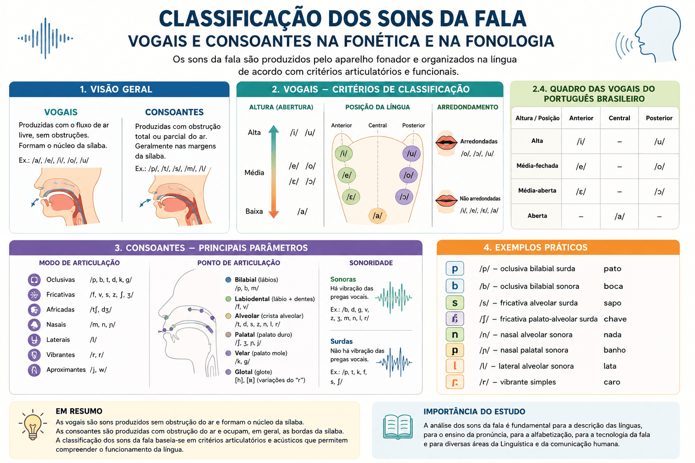

Classificação dos Sons da Fala: Consoantes e Vogais na Fonética e na Fonologia
A capacidade humana de produzir e reconhecer sons articulados constitui o pilar biológico e cognitivo sobre o qual repousa toda a estrutura da linguagem verbal. Longe de ser um fluxo amorfo de ruídos aleatórios, a cadeia da fala é composta por unidades discretas, organizadas de modo sistemático e regidas por complexas leis fisiológicas e fonológicas. O estudo descritivo e funcional desses elementos permite compreender os princípios biomecânicos e acústicos que tornam a comunicação oral possível, eficiente e inteligível.
Tradicionalmente, a ciência linguística divide os sons da fala em duas grandes classes universais: as vogais e as consoantes. Embora essa dicotomia seja comumente simplificada no ensino escolar como uma oposição rudimentar entre sons "abertos" e "fechados", a moderna Fonética Articulatória e a Fonologia Estrutural demonstram que essa separação envolve uma densa teia de parâmetros biomecânicos, propriedades acústicas de ressonância e funções distribucionais no interior da sílaba.
Segundo Cristófaro Silva (2012), a caracterização adequada dos sons exige a observação simultânea de três vertentes: a produção articulatória (a dinâmica dos órgãos do aparelho fonador), a transmissão acústica (as frequências formânticas e harmônicas das ondas sonoras) e o comportamento fonológico (o papel desses sons como fonemas distintivos ou alófones contextuais). O domínio dessa taxonomia é indispensável para áreas como a Alfabetização e Consciência Fonológica, a Fonoaudiologia Clínica, a Linguística Forense e o Processamento de Linguagem Natural (PLN).
Neste artigo acadêmico, você explorará a fundamentação epistemológica dos sons da fala, as matrizes que diferenciam a Fonética da Fonologia, a taxonomia exaustiva das vogais do português brasileiro (abertura, anterioridade, labialidade e nasalidade), os modos, pontos e graus de sonoridade das consoantes, o papel das semivogais (glides), além de tabelas comparativas, exemplos empíricos comentados, questões de vestibulares resolvidas e sínteses teóricas.

O estatuto epistemológico dos sons da fala
Os sons da fala — cientificamente designados como fones quando observados em sua realidade física — são manifestações acústicas geradas pelo trato vocal humano. Diferentemente dos sons inarticulados da natureza ou dos ruídos corporais involuntários (como a tosse ou o soluço), os sons linguísticos caracterizam-se por sua estabilidade articulatória, sua intencionalidade semiótica e sua capacidade combinatória no interior de um sistema idiomático regido por convenções culturais e históricas (CÂMARA JR., 2011).
Para apreender a natureza dos sons verbais, a ciência da linguagem articula dois campos complementares:
- Fonética: disciplina de viés empírico e biofísico que investiga as propriedades materiais do som (sua articulação neuromuscular, sua propagação mecânica e sua recepção neuroauditiva);
- Fonologia: disciplina de viés funcional e estrutural que estuda o valor distintivo, as regras de combinação e a representação mental abstrata desses sons (os fonemas) dentro de uma dada língua.
A fronteira epistemológica entre matéria e função
“A Fonética descreve os sons da fala em sua realização física, enquanto a Fonologia investiga como esses sons funcionam dentro do sistema linguístico” (CALLOU; LEITE, 2009, p. 17). Enquanto a Fonética é analítica e universal, a Fonologia é funcional e particular a cada comunidade de falantes.
Fonética e Fonologia: quadro diferencial rigoroso
A confusão entre a descrição empírica do fone e o estatuto funcional do fonema é comum entre estudantes e pesquisadores iniciantes. Como sintetiza Cagliari (2002), enquanto a Fonética busca responder "como determinado som é fisicamente produzido e transmitido?", a Fonologia dedica-se a responder "qual função esse som exerce na diferenciação de significados entre palavras?".
| Dimensão de Análise | Fonética | Fonologia |
|---|---|---|
| Objeto de Estudo | O fone: som físico, concreto, observável e mensurável. | O fonema: unidade mental abstrata e distintiva de significado. |
| Notação Científica | Representado obrigatoriamente entre colchetes [ ]. | Representado obrigatoriamente entre barras inclinadas / /. |
| Nível Teórico | Substância da expressão (fisiologia muscular e acústica). | Forma da expressão (rede de oposições estruturais e traços distintivos). |
| Instrumental Técnico | Alfabeto Fonético Internacional (AFI/IPA), espectrogramas e oscilogramas. | Testes de comutação de pares mínimos, regras fonológicas e matrizes de traços. |
| Universalidade | Universal: os mesmos critérios aplicam-se a qualquer som humano. | Específica: cada língua organiza seu próprio inventário de contrastes. |
A determinação do valor funcional pelo par mínimo
“A Fonologia não descreve simplesmente os sons produzidos pelos falantes, mas procura identificar quais diferenças sonoras são capazes de produzir diferenças de significado dentro de uma determinada língua” (CAGLIARI, 2002, p. 29). Ao contrastarmos pato /ˈpatu/ e bato /ˈbatu/, a oposição entre surdo e sonoro prova que /p/ e /b/ são fonemas distintos no português.
Classificação geral dos sons da fala: vogais, consoantes e semivogais
Do ponto de vista fisiológico e distribucional, o trato vocal pode atuar gerando livre ressonância ou impondo barreiras mecânicas. A tipologia fonética clássica agrupa os sons em três grandes categorias fundamentais:
Vogais (Sons Vocálicos)
Produzidas com a passagem completamente desimpedida da corrente aérea pulmonar pela cavidade bucal. Não há contato oclusivo nem constrição causadora de atrito ou turbulência audível. São sons de máxima amplitude acústica, alta sonoridade intrínseca e funcionam universalmente como núcleo obrigatório da sílaba no português.
Critério funcional: No português, não existe sílaba sem vogal, e nenhuma sílaba admite mais de uma vogal plena como núcleo.
Consoantes (Sons Consonantais)
Produzidas mediante a imposição de algum obstáculo ou constrição mecânica (total ou parcial) ao fluxo de ar expiratório em pontos específicos do trato vocal. Apresentam menor energia acústica que as vogais e funcionam fonologicamente como margens silábicas (ataque ou coda), apoiando-se obrigatoriamente no núcleo vocálico.
Critério funcional: Não constituem sílaba de maneira autônoma no sistema fonológico padrão da língua portuguesa.
Ao lado de vogais e consoantes figuram as semivogais (também designadas como aproximantes ou glides). São segmentos de natureza fônica contígua às vogais altas ([j] e [w]), contudo desprovidos do papel de centro silábico. Elas ocorrem sempre associadas a uma vogal genuína na formação de ditongos e tritongos (como em pai [ˈpaj] ou mau [ˈmaw]), atuando como margens vocálicas assimétricas.
Classificação detalhada das vogais do português
Na descrição fonética rigorosa sistematizada pela International Phonetic Association (IPA), as vogais não são descritas por propriedades ortográficas, mas por sua conformação espacial no quadrilátero vocálico. No português brasileiro, utilizam-se quatro parâmetros articulatórios simultâneos:
1. Altura da língua (Grau de abertura bucal)
Corresponde ao grau de elevação vertical do corpo da língua em direção ao teto da cavidade oral (palato duro e véu palatino), diretamente atrelado ao afastamento da mandíbula inferior:
- Altas (Fechadas): a língua eleva-se próximo ao palato, reduzindo ao mínimo o espaço aéreo interno (ex.: [i] em fita e [u] em luva);
- Médias-fechadas: a língua ocupa uma posição intermediária superior (ex.: [e] em medo e [o] em bolo);
- Médias-abertas: a língua ocupa uma posição intermediária inferior, com maior abertura mandibular (ex.: [ɛ] em festa e [ɔ] em bola);
- Baixas (Abertas): a língua repousa rebaixada no assoalho da boca, com amplitude bucal máxima (ex.: [a] em sala).
2. Posição horizontal da língua (Zona de articulação)
Determina o avanço ou recuo do corpo da língua ao longo do eixo anteroposterior da cavidade oral:
- Anteriores: o corpo da língua projeta-se para a frente, aproximando-se da região dental e do palato duro (ex.: [i], [e], [ɛ]);
- Central: a língua mantém-se em repouso neutro na região intermediária da cavidade bucal (ex.: [a]);
- Posteriores: o corpo da língua recua em direção ao palato mole e à faringe (ex.: [u], [o], [ɔ]).
3. Arredondamento dos lábios (Postura labial)
A postura assumida pela musculatura labial altera a extensão do trato vocal e suas frequências de ressonância acústica:
- Arredondadas (Labializadas): os lábios projetam-se ativamente para a frente, assumindo abertura circular estreita (no português, todas as vogais posteriores: [u], [o], [ɔ]);
- Não arredondadas: os lábios permanecem estendidos, relaxados ou em posição neutra (todas as vogais anteriores e a central: [i], [e], [ɛ], [a]).
4. Rota do fluxo aéreo: Nasalidade vocálica
A atuação do músculo levantador do véu palatino regula o escape acústico e aerodinâmico entre as cavidades superiores:
Vogais Orais
O véu palatino eleva-se e encosta firmemente na parede posterior da faringe (fechamento velofaríngeo hermético). O ar expiratório e as ondas sonoras ressoam e escoam com exclusividade através da cavidade bucal.
Inventário tônico: [i], [e], [ɛ], [a], [ɔ], [o], [u].
Vogais Nasais
O véu palatino permanece abaixado e relaxado. A corrente aérea e a energia de ressonância dividem-se simultaneamente entre a cavidade oral e as fossas nasais, conferindo o timbre aveludado e o amortecimento característico da nasalidade lusa.
Inventário padrão: [ĩ] (fim), [ẽ] (vento), [ɐ̃] (canto), [õ] (ponte), [ũ] (fundo).
A singularidade do subsistema nasal do português
“A nasalidade constitui um dos aspectos mais característicos do sistema fonético do português, diferenciando essa língua de diversos outros idiomas românicos e conferindo-lhe uma identidade acústica inconfundível” (CRISTÓFARO SILVA, 2012, p. 103).
Quadro fonético geral das vogais do português brasileiro
A tabela a seguir sistematiza a correlação articulatória das sete vogais orais do português brasileiro em posição tônica:
| Altura / Abertura | Anteriores (Não Arredondadas) | Central (Não Arredondada) | Posteriores (Arredondadas) |
|---|---|---|---|
| Alta (Fechada) | /i/ (ex.: fita) | — | /u/ (ex.: luva) |
| Média-fechada | /e/ (ex.: medo) | — | /o/ (ex.: bolo) |
| Média-aberta | /ɛ/ (ex.: festa) | — | /ɔ/ (ex.: bola) |
| Baixa (Aberta) | — | /a/ (ex.: sala) | — |
Classificação detalhada das consoantes
Diferentemente das vogais, a identificação dos segmentos consonantais fundamenta-se na mecânica da obstrução do ar. Segundo Callou e Leite (2009), a descrição das consoantes assenta-se em três pilares classificatórios universais:
Os Três Pilares da Classificação Consonantal
- Modo de Articulação: a natureza biomecânica do obstáculo imposto à corrente aérea (como o som escapa);
- Ponto de Articulação: o local anatômico onde os articuladores ativos e passivos se encontram (onde o som é produzido);
- Sonoridade / Vozeamento: a participação ativa ou passividade das pregas vocais na laringe (presença ou ausência de vibração).
1. Modo de articulação
Descreve a dinâmica do fluxo expiratório durante a passagem pelo trato vocal obstruído:
| Modo | Mecanismo Biomecânico | Fonemas Consonantais no PB |
|---|---|---|
| Oclusivas | Fechamento total e hermético do trato seguido de soltura abrupta e explosiva do ar retido. | /p/, /b/, /t/, /d/, /k/, /g/ |
| Fricativas | Aproximação estreita entre dois articuladores, gerando uma passagem microscópica e ruído de fricção turbulenta contínua. | /f/, /v/, /s/, /z/, /ʃ/, /ʒ/ |
| Africadas* | Articulação bifásica complexa que se inicia com oclusão hermética e encerra-se com soltura fricativa na mesma área anatômica. | [tʃ] (em dia/tia no PB), [dʒ] |
| Nasais | Oclusão completa na cavidade oral concomitante ao abaixamento do véu palatino, com escape total da ressonância pelo nariz. | /m/, /n/, /ɲ/ |
| Laterais | Bloqueio na linha média da cavidade oral pela ponta ou dorso da língua, permitindo o livre escoamento lateral do ar pelas bordas. | /l/, /ʎ/ |
| Vibrantes | Oscilação mecânica rápida (única ou múltipla) de um articulador móvel elástico (como a ponta da língua contra os alvéolos). | /ɾ/ (tepe em caro), /ʁ/ (vibrante múltipla ou fricativa uvular em rua) |
| Aproximantes | Aproximação dos articuladores sem pressão de atrito audível, limítrofe entre vogal e consoante. | /j/, /w/ |
2. Ponto de articulação
Identifica as coordenadas anatômicas exatas do trato vocal onde ocorre a constrição máxima:
| Ponto de Articulação | Órgãos Fonadores Envolvidos | Exemplos no Português |
|---|---|---|
| Bilabial | Aproximação ou contato pleno entre o lábio superior e o lábio inferior. | /p/, /b/, /m/ (ex.: porta, bola, mãe) |
| Labiodental | Contato da borda dos dentes incisivos superiores com o lábio inferior. | /f/, /v/ (ex.: faca, vaso) |
| Dental / Alveolar | Contato do ápice da língua contra a face interna dos dentes superiores ou crista alveolar. | /t/, /d/, /s/, /z/, /n/, /l/, /ɾ/ (ex.: tudo, dedo, sino, zero, lua) |
| Pós-alveolar | A lâmina da língua aproxima-se da região óssea imediatamente posterior aos alvéolos. | /ʃ/, /ʒ/ e os alófones [tʃ], [dʒ] (ex.: chave, jogo, tia) |
| Palatal | O dorso da língua eleva-se contra a abóbada do palato duro (céu da boca). | /ɲ/, /ʎ/ (ex.: ninho, milho) |
| Velar | O dorso posterior da língua apoia-se contra o véu palatino (palato mole). | /k/, /g/ (ex.: casa, gato) |
| Glotal | Constrição realizada pelas próprias pregas vocais na fenda da glote. | Realizações aspiradas [h], [ɦ] do arquifonema /R/ (ex.: carro, rapaz) |
3. Sonoridade e traço de vozeamento
A sonoridade constitui um dos contrastes mais fundamentais da fonologia do português. Quando a corrente de ar expiratória força a oscilação das pregas vocais aduzidas na laringe, gera-se um som sonoro (vozeado). Quando as pregas permanecem abertas e relaxadas, o ar flui sem vibração tecidual, originando um som surdo (desvozeado):
| Modo de Articulação | Sons Surdos (Desvozeados) | Sons Sonoros (Vozeados) |
|---|---|---|
| Oclusivas Bilabiais | /p/ (ex.: pote) | /b/ (ex.: bote) |
| Oclusivas Dentoalveolares | /t/ (ex.: teto) | /d/ (ex.: dedo) |
| Oclusivas Velares | /k/ (ex.: calo) | /g/ (ex.: galo) |
| Fricativas Labiodentais | /f/ (ex.: fada) | /v/ (ex.: vada) |
| Fricativas Alveolares | /s/ (ex.: selo) | /z/ (ex.: zelo) |
| Fricativas Pós-Alveolares | /ʃ/ (ex.: chá) | /ʒ/ (ex.: já) |
| Sonorantes Contínuas | — | Todas as Nasais (/m/, /n/, /ɲ/) e Líquidas (/l/, /ʎ/, /ɾ/, /ʁ/) são sonorantes intrínsecas. |
Teste biomecânico da sonoridade laríngea
Para constatar na prática a oposição de sonoridade, basta posicionar suavemente a ponta dos dedos sobre a saliência da cartilagem tireóidea (pomo de adão) na laringe e emitir de modo contínuo os fones fricativos [ffff] e depois [vvvv]. Durante o [v], percebe-se imediatamente um formigamento vibratório mecânico nítido, resultante da oscilação rítmica das pregas vocais, rigorosamente ausente na produção de [f].
Inventário fonológico consonantal do português brasileiro
O quadro analítico a seguir sintetiza os 19 fonemas consonantais constitutivos do sistema fonológico padrão do português brasileiro, classificados conjuntamente pelos três eixos fundamentais:
| Modo / Ponto | Bilabial | Labiodental | Alveolar | Pós-Alveolar | Palatal | Velar | Glotal |
|---|---|---|---|---|---|---|---|
| Oclusiva Surda | /p/ | — | /t/ | — | — | /k/ | — |
| Oclusiva Sonora | /b/ | — | /d/ | — | — | /g/ | — |
| Fricativa Surda | — | /f/ | /s/ | /ʃ/ | — | — | [h] |
| Fricativa Sonora | — | /v/ | /z/ | /ʒ/ | — | — | [ɦ] |
| Nasal Sonora | /m/ | — | /n/ | — | /ɲ/ | — | — |
| Lateral Sonora | — | — | /l/ | — | /ʎ/ | — | — |
| Vibrante Sonora | — | — | /ɾ/ | — | — | /ʁ/ | — |
Roteiro metodológico: como classificar um som da fala
A identificação taxonômica precisa de qualquer segmento fônico nas línguas naturais exige uma sequência deliberada de análises procedimentais. O fluxograma metodológico a seguir norteia a classificação técnico-linguística:
Etapas do roteiro analítico de classificação sonora
- Identificação do papel silábico e fluxo aéreo: verificar se o som é produzido com passagem contínua desobstruída atuando como centro de sílaba (vogal) ou com constrição mecânica atuando como margem (consoante);
- Avaliação da rota velofaríngea: observar a posição do véu palatino para determinar se o fluxo e a ressonância são exclusivamente orais ou se contam com acoplamento da cavidade nasal;
- Inspeção do vozeamento laríngeo: averiguar o estado das pregas vocais para catalogar o traço de sonoridade (som sonoro/vozeado versus surdo/desvozeado);
- Determinação da zona ou ponto de contato: registrar com precisão quais articuladores ativos (língua, lábios) aproximam-se de quais estruturas passivas (dentes, alvéolos, palato duro, véu palatino);
- Determinação da dinâmica aerodinâmica (Modo): analisar se a soltura do ar opera por explosão oclusiva, atrito fricativo, canalização lateral ou batimento vibratório;
- Formalização transcricional IPA: transcrever o fone apurado utilizando o símbolo unívoco do Alfabeto Fonético Internacional acompanhado de seus diacríticos necessários.
Exemplo prático de análise fonético-articulatória
Situação fônica em análise
Examinemos o comportamento do segmento inicial da palavra faca [ˈfakɐ] em contraste com vaca [ˈvakɐ] e maca [ˈmakɐ].
Análise técnica dos parâmetros
No som inicial de faca (/f/), o articulador ativo (lábio inferior) apoia-se contra o articulador passivo (bordas dos incisivos superiores), gerando uma constrição labiodental contínua. O véu palatino está elevado (som oral). Na laringe, as pregas vocais permanecem abduzidas e imóveis. Classificação completa: consoante fricativa labiodental surda oral.
No som inicial de vaca (/v/), o ponto e o modo de articulação são exatamente idênticos aos de /f/. No entanto, os músculos intrínsecos da laringe aduzem as pregas vocais, que vibram intensamente durante a expulsão fricativa do ar. Classificação completa: consoante fricativa labiodental sonora oral.
No som inicial de maca (/m/), a constrição desloca-se para a oclusão hermética entre ambos os lábios (ponto bilabial). O véu palatino abaixa-se, abrindo as coanas nasais, enquanto as pregas vocais vibram ativamente na laringe. Classificação completa: consoante oclusiva bilabial nasal sonora.
Implicações para o sistema linguístico
Essa tríade demonstra de forma límpida a teoria dos traços distintivos: a simples alteração de um único parâmetro fonético (o vozeamento entre /f/ e /v/, ou o modo e nasalidade entre /v/ e /m/) é suficiente para alterar o signo linguístico e instaurar significados completamente distintos no vocabulário da língua portuguesa.
Questões para estudo e reflexão
Questão 1
(Mestre Kira / Teoria Geral) Por que razão a ciência fonética afirma que não existe sílaba sem vogal na língua portuguesa?
Ver resposta comentada
Resposta comentada: Porque a organização silábica do português é pautada na escala de sonoridade e proeminência acústica. As vogais apresentam o maior grau de abertura e energia ressonante do trato vocal, funcionando como o núcleo indispensável em torno do qual as consoantes se agrupam como margens silábicas de ataque ou coda. Sem vogal, inexiste centro de pico acústico capaz de sustentar a emissão silábica no sistema fonológico do português.
Questão 2
(ENEM / Variação e Fonética) Ao contrastarmos as palavras avô (/o/) e avó (/ɔ/), qual é o único parâmetro articulatório responsável pela diferenciação de significado entre esses termos?
Ver resposta comentada
Resposta comentada: O único parâmetro distintivo é a altura da língua / grau de abertura bucal. Ambas as vogais são posteriores, arredondadas e orais; contudo, a vogal de avô (/o/) é média-fechada (menor abertura mandibular e maior elevação da língua), enquanto a vogal de avó (/ɔ/) é média-aberta (maior abertura da cavidade bucal e depressão lingual).
Questão 3
(PAES UEMA / Letras) Em muitas variedades do português brasileiro, as palavras tia e dia são pronunciadas respectivamente como [ˈtʃi.ɐ] e [ˈdʒi.ɐ]. Como a fonética articulatória classifica esses fones consonantais e qual a sua relação fonológica com os fonemas /t/ e /d/?
Ver resposta comentada
Resposta comentada: Foneticamente, [tʃ] e [dʒ] são classificados como consoantes africadas pós-alveolares (sendo a primeira surda e a segunda sonora). Sob a perspectiva fonológica do português brasileiro, elas atuam como alófones contextuais (variantes combinatórias) dos fonemas oclusivos alveolares /t/ e /d/ desencadeadas pela assimilação coarticulatória diante da vogal alta anterior [i].
Questão 4
(Concurso Público / Linguística) Qual é a diferença na posição dos articuladores entre a produção da consoante nasal /m/ e a consoante oclusiva /b/?
Ver resposta comentada
Resposta comentada: Em ambas as consoantes, o ponto de articulação é bilabial (lábio contra lábio) e as pregas vocais encontram-se em vibração ativa (sons sonoros). A diferença reside exclusivamente no véu palatino: em /b/, o véu palatino está elevado contra a faringe, vedando a cavidade nasal e gerando um som oral oclusivo; em /m/, o véu palatino permanece rebaixado, permitindo que o fluxo aéreo e a energia ressonante escapem continuamente pelas fossas nasais.
Questão 5
(Mestre Kira / Fonoaudiologia) O que caracteriza a categoria das consoantes líquidas do português brasileiro e como elas se subdividem articulatória e funcionalmente?
Ver resposta comentada
Resposta comentada: As consoantes líquidas caracterizam-se por apresentarem elevado grau de sonoridade e abertura, situando-se em uma zona intermediária entre as consoantes obstruintes e as vogais, o que lhes permite participar de encontros consonantais na mesma sílaba (ex.: prato, bloco). Subdividem-se em: (1) Laterais (/l/ alveolar e /ʎ/ palatal), nas quais o ar escapa pelos lados da língua; e (2) Vibrantes (/ɾ/ tepe alveolar e /ʁ/ vibrante múltipla/fricativa posterior), produzidas por batimento rítmico do articulador.
Resumo da Classificação dos Sons da Fala
- A Fonética descreve a materialidade física e articulatória dos fones [ ], enquanto a Fonologia estuda a função abstrata distintiva dos fonemas / /;
- As vogais caracterizam-se pelo trânsito aéreo livre no trato oral e funcionam como núcleos obrigatórios e soberanos de toda sílaba na língua portuguesa;
- As consoantes envolvem algum grau de constrição ou barreira mecânica e desempenham o papel funcional de margens silábicas;
- As vogais classificam-se em quatro eixos: altura da língua (abertura), posição horizontal (anterioridade), arredondamento labial e rota velofaríngea (oralidade versus nasalidade);
- O português brasileiro apresenta um subsistema tônico oral de 7 vogais (/i, e, ɛ, a, ɔ, o, u/) e 5 vogais nasais (/ĩ, ẽ, ɐ̃, õ, ũ/);
- As consoantes são classificadas por três parâmetros universais: modo de articulação (oclusivas, fricativas, nasais, laterais, vibrantes), ponto de articulação (bilabiais a glotais) e sonoridade (surdas ou sonoras);
- As semivogais ([j] e [w]) atuam como transições vocálicas sem status de núcleo silábico, constituindo ditongos e tritongos;
- O domínio da classificação articulatória subsidia a alfabetização, a fonoaudiologia clínica, o ensino de línguas e a computação da fala.
Perguntas frequentes sobre a Classificação dos Sons da Fala
Qual é a diferença entre som da fala, fonema e letra?
O som da fala (fone) é o evento biofísico e acústico real emitido pelo falante. O fonema é a imagem acústica mental e abstrata que cumpre função de diferenciar significados na língua. A letra (grafema) é apenas a convenção visual desenhada na escrita para tentar representar esse sistema sonoro de forma arbitrária e secundária.
Por que uma consoante não pode formar sílaba sozinha no português?
Porque o sistema fonológico da língua portuguesa é estruturado estritamente pelo princípio da hierarquia de sonoridade intrínseca. A sílaba exige um pico de amplitude acústica (fornecido obrigatoriamente por uma vogal livre). Como as consoantes apresentam menor sonoridade e envolvem obstrução do trato, elas operam apenas como contornos marginais (ataque ou coda).
Quais são as vogais médias-abertas e médias-fechadas do português?
As vogais médias-fechadas são /e/ (anterior) e /o/ (posterior), pronunciadas com menor afastamento mandibular (como em você e avô). As vogais médias-abertas são /ɛ/ (anterior) e /ɔ/ (posterior), pronunciadas com maior rebaixamento da língua e abertura da boca (como em pé e avó).
O que é uma consoante fricativa?
É uma consoante articulada pela aproximação estreita entre dois órgãos do aparelho fonador, sem que ocorra fechamento total. A passagem forçada da corrente aérea através dessa fenda estreita gera turbulência e um ruído sibilante e contínuo característico, como em [f], [v], [s], [z], [ʃ], [ʒ].
O que significa dizer que uma consoante é oclusiva?
Significa que os articuladores móveis encostam de maneira hermética contra um articulador passivo, bloqueando por alguns milissegundos toda e qualquer saída de ar. Quando esse bloqueio é desfeito bruscamente, o ar retido sob pressão é liberado em uma pequena explosão acústica, como em [p], [b], [t], [d], [k], [g].
Como funcionam as semivogais nos ditongos?
Nos ditongos, as semivogais /j/ (grafada comumente como i ou e) e /w/ (grafada como u ou o) apoiam-se na vogal nuclear plena da sílaba. Se a semivogal vem antes da vogal (como em série), forma-se um ditongo crescente; se vem depois da vogal (como em noite), forma-se um ditongo decrescente.
Por que a letra 'x' pode representar quatro sons diferentes?
Porque a escrita é histórica e etimológica, enquanto a pronúncia da língua sofreu transformações diacrônicas ao longo dos séculos. Assim, na convenção gráfica atual, o mesmo grafema x registra o fonema fricativo /ʃ/ (xícara), o fricativo /z/ (exame), o fricativo /s/ (máximo, texto) e o grupo oclusivo-fricativo complexo /ks/ (táxi).
Qual a relevância do estudo da classificação dos sons para os exames e vestibulares?
Exames como o ENEM, o PAES UEMA e concursos públicos cobram com frequência a classificação dos sons da fala articulada a questões de contagem de letras e fonemas, identificação de dígrafos, encontros consonantais e vocálicos, processos de variação dialetal regional e compreensão dos erros ortográficos comuns na fase de alfabetização.
Considerações finais
A classificação dos sons da fala estabelece as bases científicas para a compreensão minuciosa do sistema linguístico da língua portuguesa. Ao desmontar a ilusão de que a escrita espelha perfeitamente a fala e ao mapear com precisão os movimentos articulatórios e as vibrações acústicas de cada fone, a Linguística revela a sofisticada mecânica biológica que viabiliza a enunciação humana.
Dominar as categorias taxonômicas das vogais e consoantes — da abertura e anterioridade lingual à dinâmica do vozeamento laríngeo e da vedação velar — é requisito essencial para estudantes de Letras, educadores, fonoaudiólogos e pesquisadores, conferindo o rigor descritivo indispensável para transformar a observação espontânea da linguagem em prática científica e pedagógica de excelência.
Conteúdos relacionados
- Introdução à Fonética: o que é, para que serve e como se relaciona com a fonologia
- Classificação Fonética Detalhada das Vogais
- Os órgãos da fala e a produção dos sons da linguagem humana
- Relação entre Fonema e Grafema na Língua Portuguesa
- Fonética Articulatória no Português: funcionamento e exemplos práticos
- Fonética e Estudo dos Sons da Fala — Índice de Conteúdos
Referências
- BECHARA, Evanildo. Moderna Gramática Portuguesa. 39. ed. rev. e ampl. Rio de Janeiro: Nova Fronteira, 2019.
- CAGLIARI, Luiz Carlos. Análise Fonológica: introdução à teoria e à prática. Campinas: Mercado de Letras, 2002.
- CALLOU, Dinah; LEITE, Yonne. Iniciação à Fonética e à Fonologia. 11. ed. Rio de Janeiro: Jorge Zahar, 2009.
- CÂMARA JR., Joaquim Mattoso. Princípios de linguística geral. 4. ed. Rio de Janeiro: Acadêmica, 1970.
- CÂMARA JR., Joaquim Mattoso. Estrutura da Língua Portuguesa. 46. ed. Petrópolis: Vozes, 2011.
- CRISTÓFARO-SILVA, Thaïs. Fonética e Fonologia do Português: roteiro de estudos e guia de exercícios. 11. ed. São Paulo: Contexto, 2012.
- INTERNATIONAL PHONETIC ASSOCIATION. Handbook of the International Phonetic Association. Cambridge: Cambridge University Press, 1999.
- LADEFOGED, Peter. A Course in Phonetics. 5. ed. Boston: Thomson Wadsworth, 2006.
- MORAIS, Artur Gomes de. Consciência Fonológica na Educação Infantil e no Ciclo de Alfabetização. Belo Horizonte: Autêntica, 2019.
- SEARA, Izabel Christine; NUNES, Vanessa Gonzaga; LAZZAROTTO-VOLCÃO, Cristiane. Para conhecer Fonética e Fonologia do Português. São Paulo: Contexto, 2011.
Explore Outros Conteúdos
Continue seus estudos acessando outras seções do site Mestre Kira: